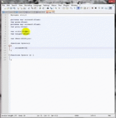

Гейміфікація
Гейміфікація - це застосування елементів ігрового дизайну і гральних принципів в неігровому контексті. Гейміфікація зазвичай використовує елементи ігрового дизайну для підвищення залученості користувачів, організаційної продуктивності, потоку, навчання, краудсорсингу, найму та оцінки співробітників, простоти використання, корисності систем, фізичних вправ, порушень правил дорожнього руху, апатії виборців і багато чого іншого. Більшість досліджень по гейміфікації виявляють, що вона робить позитивний вплив на людей. Однак існують індивідуальні та контекстуальні відмінності.
Освіта і професійна підготовка є областями, у яких був виявлений інтерес до гейміфікації. Microsoft випустила гру Ribbon Hero 2 в якості доповнення до свого пакет Office для підвищення продуктивності. Фактично цей проект був описаний Microsoft як один з найпопулярніших проектів, коли-небудь випущених його підрозділом Office Labs. Департамент освіти міста Нью-Йорка за фінансової підтримки MacArthur Foundation і Bill and Melinda Gates Foundation створили школу під назвою Quest to Learn яка зосереджена навколо навчання на основі ігор, із наміром зробити освіту більш привабливою і актуальною для сучасних дітей. SAP використовує гру для навчання своїх співробітників принципам стійкого розвитку. Американські військові і Unilever також використовують гейміфікацію в своїх цілях підвищення кваліфікації.
Ханська академія є прикладом використання методів гейміфікації в онлайн-освіті. У серпні 2009 року Gbanga запустила освітню гру Gbanga Zooh для Цюріхського зоопарку на основі визначення місця розташування, у якій учасникам пропонувалося активно рятувати знаходяться під загрозою зникнення тварин і фізично повертати їх в зоопарк. Гравці підтримували віртуальні місця проживання через Canton of Zurich, щоб залучати і збирати зникаючі види тварин. Є деякі ознаки того, що гейміфікація може бути особливо мотивуючої для учнів з дислексією в освітніх ситуаціях.
Гейміфікація використовується в корпоративному навчанні, щоб мотивувати співробітників застосувати те, що вони дізналися в процесі навчання, до своєї роботі, теоретично це має поліпшити продуктивність. Згідно з дослідженням, проведеним Badgeville, 78% працівників використовують ігрову мотивацію на роботі і майже 91% говорять, що ці системи покращують свій досвід роботи підвищення залученості, обізнаності та продуктивності.
Підтримка


Unity 3d
“Unity використовується для створення половини ігор в світі. Наша платформа в реальному часі, підтримує інструменти та послуги, пропонує неймовірні можливості для розробників ігор і розробників в різних галузях і додатках.”
Про проект
 Сайт розроблений для підтримки гри виконаної в unity і ознайомлення з поняттям гейміфікації. Основою проекту є прикладна програма InfoDef. Покликана ознайомити користувача з основами кібер безпеки. Ознайомитись із описом програми і завантажити можливо у розділі завантаження.
{kind=link}